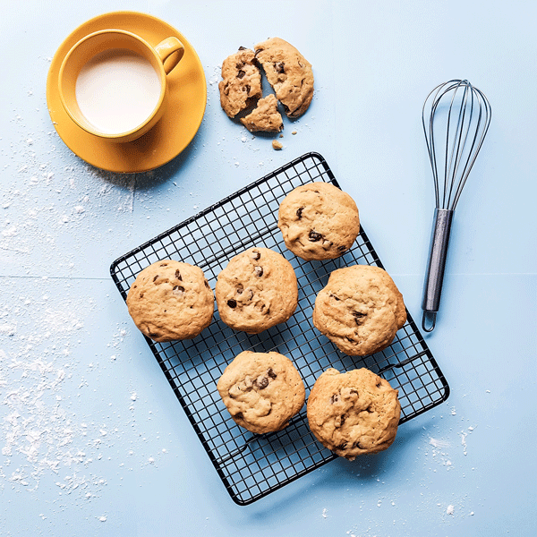

Om meg

Jeg er Kristine og jeg har startet denne matbloggen. Her finnes retter som jeg har skaffet meg igjennom årene, og de fleste er basert på min families gamle oppskrifter. Denne bloggen startet som et skoleprosjekt, hvor jeg i løpet av den prosessen så muligheten for å ha en digital oppskriftbok, både for min egen del og for å dele med venner og familie. Akkurat nå er ikke muligheten der for å hverken sende inn en melding direkte til meg eller å skrive en kommentar på oppskriftene, men dette er ting jeg skal lære og bli bedre på og imlementere på min blogg!